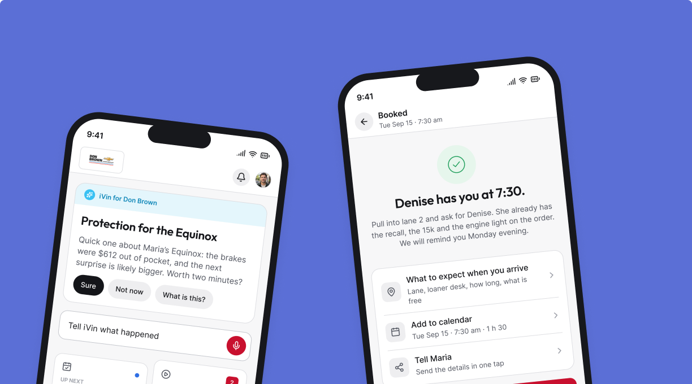
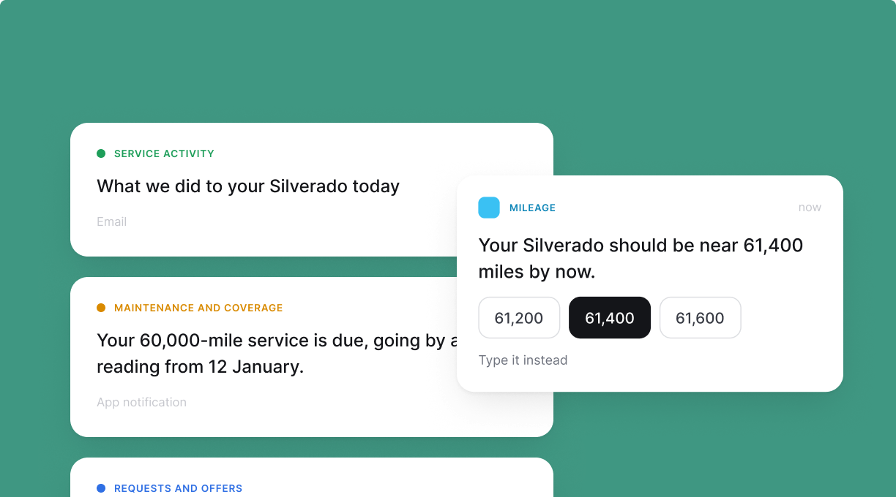
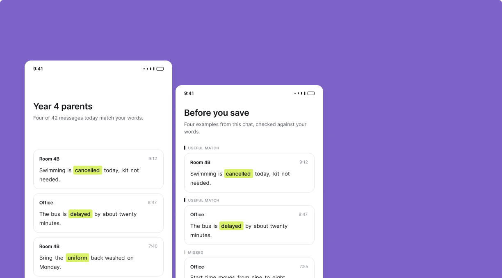
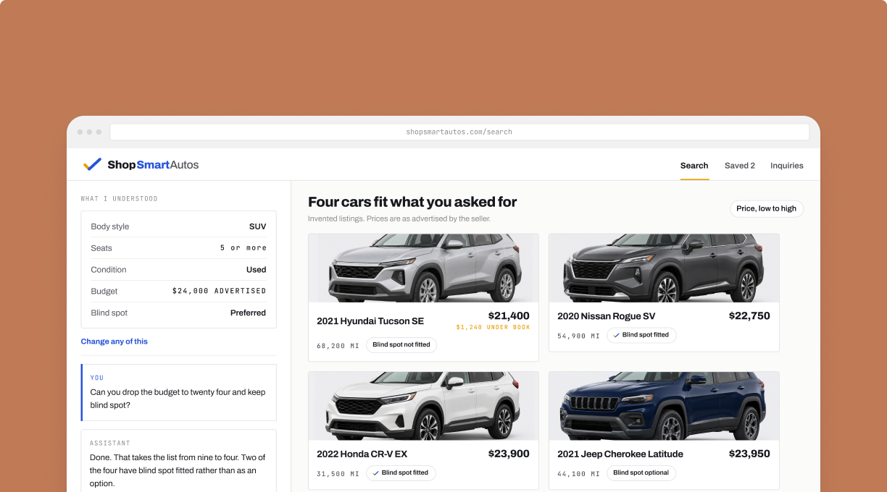

iVin
An AI assistant that uses the car's record to answer coverage questions and carry the conversation into service booking.
Vinsyt · Consumer mobile app · 2022 to 2026 · In production
Read the case study Consumer mobile app
Product and UX/UI designer
I work across product flows, interfaces, and design systems, helping shape what gets built and working closely with engineering from the first sketch through delivery.
What connects the work
Five of these projects come from the same product ecosystem, where I worked across the consumer experience, owner web product, communications, and the system they share. The other three are independent concepts where I chose the problem myself.
Across both, I tend to work on problems where the interface is only one part of the design.

An AI assistant that uses the car's record to answer coverage questions and carry the conversation into service booking.
Vinsyt · Consumer mobile app · 2022 to 2026 · In production

Reminders across 20 mileage milestones and three channels, with rules for what to send, what needs confirming, and when to stay quiet.
Vinsyt · Email, SMS and push · 2024 to 2026 · In production

A smaller list from a group chat you still need to follow.
Independent concept · Group chat concept

An AI shopping concept that turns everyday needs into preferences a shopper can check before comparing cars and contacting a dealer.
Independent concept · AI shopping concept
How I work
Before drawing the interface, I want to understand what the product should do, what it should know, and what it should ask from the person using it.
The screen, the flow, and the words all make the same promise. I work on them as one experience.
I work with engineering from early constraints through implementation, especially when APIs, data, delivery rules, or platform behavior affect the experience.
Shared components, tokens, rules, and patterns matter because the fifth version should not require redesigning the first four.
Email is the fastest way to reach me.
fernando.catter@gmail.com